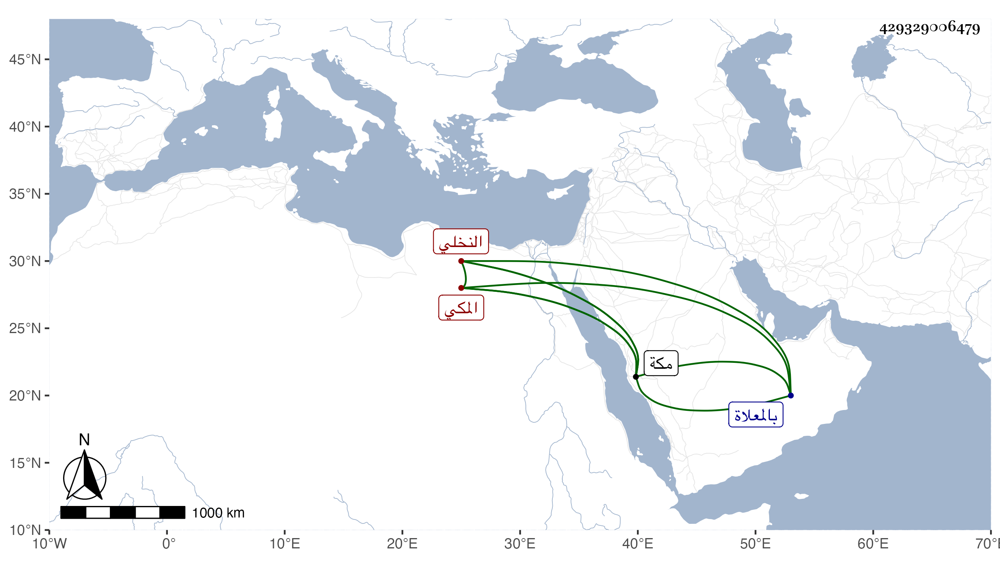

0902Sakhawi.DawLamic.ITO20230111-ara1.EIS1600.429329006479
Biography ID: 429329006479
481
عيسى بن أحمد بن عيسى بن عمران النخلي بنون مفتوحة ثم معجمة نسبة لوادي نخلة من أعمال مكة المكي ويعرف بعصارة بمهملة مضمومة ثم أخرى مفتوحة لقب لبعض آبائه وأقاربه . سمع من العز بن جماعة والفخر النويري في سنة ثلاث وخمسين بعض النسائي ، وكانت له أموال بنواحي وادي نخلة اليمانية خيرا دينا له جهات بر في مكة ، ومات بها في آخر رمضان سنة عشر ودفن بالمعلاة وأكثر إقامته كانت عند أمواله . ذكره الفاسي في مكة وقال ما علمته حدث وخلف ابنه عمران من أمة له فمحق التركة عفا الله عنه ورحم أباه .
